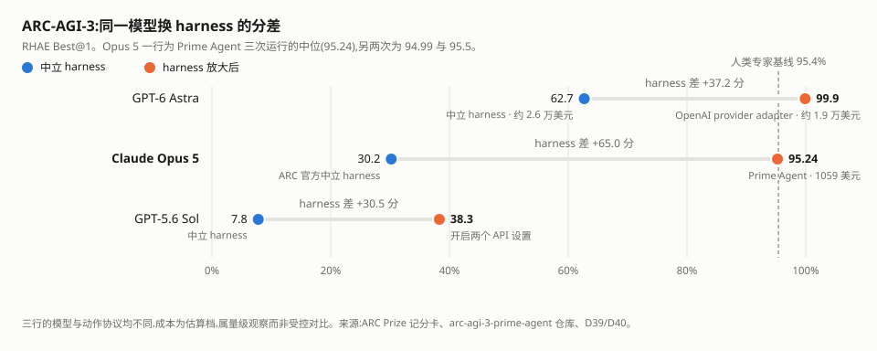

00全景与读法
D29 详解 DeepSeek Harness 时留了一段"跟进：对照 Prime Agent"，本文把那一段展开成完整拆解。Prime Intellect 于 2026-08-05 开源的 Prime Agent（MIT，repo，arXiv 2608.23552）不是又一个编程 agent：它把工具、历史与子代理全部变成持久 Python REPL 里的可编程对象（RLM），再让 agent 依自己的轨迹持续 CRUD 提示词、子代理、技能与记忆（Continual Harness）。它的自我改进不动模型权重——把策略写成 π(a | s; θ, H)，它优化的是 H 这一半。最硬的证据在 ARC-AGI-3：同一个 Opus 5，ARC 官方中立 harness 记 30.2%，换上 Prime Agent 得 95.24%（三次运行中位），人类专家基线是 95.4%。
每一节固定三段：朴素基线（左栏，灰）——不看这份仓库、按直觉搭一个长程 agent 会怎么做；它的做法（右栏，橙）——Prime Agent 官方文档里的实际做法；差在哪（下方色块）——差异的实质、官方是否给了理由或证据、对 RL-on-NPU 的含义。数字按来源分三类：第三方 独立测量或多方报道一致；自报 Prime Intellect 或其他厂商口径；推断 本站分析。
贯穿全文有两条线索。其一是控制面的位置：传统 harness 里"下一步怎么做"由 harness 作者决定，Prime Agent 把这个决定权交给运行中的 agent。其二是"harness 即分数"的第二个极端样本：D39/D40 记录的是厂商用自家适配层把分数抬上去（Astra 的 99.9% 对 62.7%），本篇记录的是开源 harness 把同一个模型抬上去（Opus 5 的 95.24% 对 30.2%），后者的杠杆更大、成本低一个数量级。
① 技术报告已经存在——arXiv 2608.23552（Karten 等），不是"仍在后续计划里"。② 95.5% 是三次运行里最好的一次，官方报告口径是中位数 95.24%；而 183/183 全关卡出自 RHAE 最低的那次（94.99%）。三个数字分属三次不同运行，不能拼成一句话。③ await rlm(...) 返回的是准入句柄，不是子代理的答案——官方原文"it never waits for or returns the child's answer"，结果只经 agent_message 或文件回流。④ Continual Harness 的谱系是具身智能体而非编码（arXiv 2605.09998，宝可梦 Red/Emerald），且该谱系已经做过 θ 与 H 的联合训练（online DAgger + 过程奖励模型）——"模型与 harness 协同学习"不是未来工作。
01问题：harness 提前写死，模型却一直在变
主流 coding agent 的形状是固定的：固定 system prompt → 固定 tool schema → tool call → observation → 固定压缩策略 → 回到模型。harness 决定有哪些工具、工具签名长什么样、上下文满了怎么压、子代理怎么调、记忆怎么存、技能是什么。这些决定在模型能力冻结的假设下是合理的。Prime Intellect 的出发点是这个假设不成立：模型每几个月强一档，却始终被迫适配几个月前定下的 tool schema 与压缩策略。

ipython），其余能力都是 kernel 里可调用的对象，其中第五支 p·G·K·M 还带一条回到模型的虚线。推断 本站图，依原文图 A 由第 1 个 mermaid 块渲染。这张图怎么读
要看的是箭头的出发点数量。左侧模型有五个平行出口，每个出口的形状由 harness 作者定义；右侧模型只有一个出口，出口之后的分支由模型自己在 Python 里写出来。这不是"工具变少了"，而是把工具的组合权从 schema 层挪到了程序层——两个工具的串联在左侧需要两轮模型请求，在右侧是一行代码。
再看右下角那条虚线：p·G·K·M（提示词、子代理、技能、记忆）指回模型自身。这是全篇唯一一条反馈边，也是"self-improving"这个词的全部来源——左侧图里不存在任何一条能改变自身配置的边。判断这套设计是否成立，看的就是这条虚线上有没有可信的增益证据（见第 11 节：目前编码任务上没有）。
朴素基线
为模型设计一套尽量完备的工具集与压缩策略，随模型升级由开发者迭代 schema；agent 在固定接口内工作，harness 的演进节奏由人决定。
它的做法
只保留一个内建工具，把其余能力预加载成 kernel 里的函数与模块；再把提示词、子代理、技能、记忆做成 agent 可 CRUD 的持久状态，自报 默认作用域限于当前会话。
差在哪差异在于谁拥有"下一步怎么做"的决定权。官方给的理由是模型能力的迭代速度快于 harness 的迭代速度，这个理由是叙述性的，没有给出量化证据（例如"同一 harness 在相邻两代模型上的相对损失"）。对 RL-on-NPU 的含义：如果 harness 的组合决策进入模型的动作空间，那么 RL 训练的动作空间定义必须随之扩大——推断 这是目前国产 RL 栈尚未处理的一类动作。
02第一刀：唯一的内建工具是 IPython
官方文档的措辞很硬："The default RLM runtime exposes one built-in model tool: ipython." 读写文件、跑项目命令、变换结果、调用技能、委派工作，全部从这个持久 kernel 出发，而不是各自一个内建工具（RLM 文档）。
第一个实际收益是 token 效率。传统形态下模型要 read_file("huge.log")，50K token 全部进上下文，再由模型在里面找 ERROR；Prime Agent 里模型写 errors = [x for x in text.splitlines() if "ERROR" in x] 再 print(errors[-20:])，进入上下文的只有 20 行。一句话概括这个价值判断：不要让模型用 token 去搬运数据，让模型写程序处理数据。
朴素基线
为每种能力定义一个工具：read_file、bash、grep、edit_file、search。工具返回的原始数据整段进入上下文，由模型在上下文里做筛选与聚合；两个工具的串联需要两轮模型请求。
它的做法
一个持久 kernel。数据留在 Python 变量里，模型写代码筛选后只把结果 print 进上下文；串联、并发（asyncio.gather）、循环处理都在一次工具调用内完成。自报 这是长上下文任务上 token 效率占优的机制来源。
差在哪差异的实质是把"数据搬运"从 token 预算里移出去。官方给了机制解释但未公布逐项 token 计数，所以"更省 token"目前是机制上可信、量级上未披露。推断 这套设计对昇腾侧的直接价值不在省钱，而在降低长程任务对超长上下文的依赖——上下文长度是 KV cache 显存与带宽的直接乘数，把工作集压小等于把长程 agent 的部署门槛从长上下文能力挪到 CPU 侧的执行环境。
03RLM：上下文即变量，子代理即函数调用
rlm 是预加载在 kernel 里的可调用对象：handle = await rlm("Review the authentication flow", name="auth-reviewer")。这里有一处必须澄清的语义，也是流传版本里最容易错的一点。官方原文是："The call returns immediately after task admission with a child handle; it never waits for or returns the child's answer." await rlm(...) 等到的是准入，不是答案；返回的句柄只含 rlm_child_id、name、session_dir、model 四个字段。结果只经两条通道回流——显式的 agent_message 回复，或文件。
所以子代理在这里更接近持久 worker 而不是一次性的函数补全：成功完成的 daemon 支撑子代理在父会话开着的期间一直可寻址，父作用域的子代理注册表跨压缩、跨 kernel 重启、跨父会话恢复存活（await rlm.list_subagents()），不再需要时才显式 delete_subagent。子代理默认继承父代理的模型、provider 配置、技能、工具、重试策略与资源加载器，除非调用点指定另一个已配置模型；其用量计入父会话，但在上下文树报告里仍可区分。默认递归深度只允许根代理创建子代理，调高配置后子孙可继续递归。
技能是 Python 包，不是提示词片段。 Prime Agent 支持 Agent Skills 的 markdown 格式，并用 Python 后端扩展它：两者都用 SKILL.md 做发现与路由，Python 后端技能额外带一个安装进 kernel 环境、按 import 名暴露的包，于是模型可以直接 report = await release_audit(repository=".", target_version="0.4.0")。启动提示词里只放技能元数据，任务匹配时才加载完整 SKILL.md——这是把技能目录的 token 成本从 O(全部技能) 降到 O(元数据) 的做法。技能自身也可以调用 rlm(...) 递归委派。
朴素基线
调用子代理 → 阻塞等待 → 拿到摘要 → 子代理销毁。父代理在等待期间不做事；子代理的上下文随其结束一起丢弃，后续想追问只能重新起一个并重述背景。
它的做法
调用立即返回准入句柄，父代理继续干活或直接结束 turn；子代理主动 agent_message.send(..., receiver_role="parent") 回流。完成后的子代理保留，父代理可用 receiver_name 对它追加指令，接着之前的会话继续。
差在哪差异是子代理从"函数补全"变成"持久 worker"，代价是父代理必须自己处理异步汇合——官方把这条做成硬约束（永不返回答案），是为了避免"父代理阻塞等待"这一失稳模式，理由未在文档中写明。推断 对 agentic RL 的价值在于：用量计入父会话但在上下文树中可区分、注册表跨压缩与 kernel 重启存活，这恰好构成带完整父子归属的多代理轨迹，与 D22 的 Model Gateway 捕 logprob、D24 §7 的 partial rollout 属同一问题域。
04宿主分层与安全模型
一个被普遍略过、但对 RL 与可审计性最关键的事实：Prime Agent 不是一个 Python 程序。官方架构文档写明："Provider calls, session persistence, child lifecycles, scheduling, and safety policy remain in the TypeScript host; the Python REPL is the model-facing programming surface." 凭据、模型执行、转录写入、worker 路由与调度都不在 Python 里；需要动这些权威状态的能力（goal、agent_message、rlm_heartbeat、compact）走一条类型化的宿主请求通道 rlm.host_request(...)，由 TypeScript 会话校验并拥有状态转移。

AgentSession 拥有 provider 调用、队列、工具、压缩、目标、子代理生命周期与转录写入；Python kernel 只是模型面向的控制环境，动权威状态要经虚线上的类型化宿主请求。推断 本站图，依原文图 B 由第 2 个 mermaid 块渲染。这张图怎么读
要看的是哪些边直接连到 provider 与存储。AgentSession 与子运行时各有一条边通到模型 provider、一条边通到会话 JSONL；Python kernel 一条都没有。这就是"kernel 不持有凭据"的图形表述——模型能写任意 Python，但写不出一次未经宿主校验的模型调用或转录写入。第 03 节说子代理用量计入父会话却仍可区分，机制就在这两组平行的边上。
另一处值得停留的是左上角：交互式 TUI 与 headless 客户端都只连到 supervisor，不连 worker。客户端断开时 worker 继续跑，这是第 05 节 daemon 支撑长程运行的结构前提。而 kernel 回到 AgentSession 的那条虚线只标了四个能力（goal、agent_message、rlm_heartbeat、compact）——可编程的边界到此为止，"一切皆可编程"是有明确外沿的。
另一个结构性事实：从会话队列往后，无论提示词来自附着的用户、心跳、cron 日程、目标续跑、自治模式，还是另一个 agent，走的是同一条执行与持久化路径。"用户"在架构上只是提示词来源之一——长程自治不是外挂脚本，而是一等公民。
朴素基线
agent 进程持有 API key，工具在同一进程内执行；沙箱作为可选配置项加在工具层之外；用户输入是唯一的提示词来源，自动化靠外部脚本反复调用 CLI。
它的做法
TypeScript 主机持有凭据、调度与安全策略，Python kernel 只是模型面向的编程面，二者以类型化宿主请求相连；worker 与 kernel 分进程；心跳、日程、目标续跑、自治模式与跨代理消息与用户输入走同一条队列。
差在哪分层本身是稳健的，但安全模型是否定式的：官方在 README 与文档两处写明，worker 与 kernel 分进程是为了生命周期隔离与故障恢复，"they are not a security sandbox"，通常以与客户端相同的操作系统权限运行，跑不受信任的代码要自套外部沙箱。这与 D35 记录的"每 agent 一沙箱"生产共识、以及 dsh 的四层权限模型（capability seam 可替换 + 预设能力集 + fs/* 与 tools/* 事件策略 + ctx.sandbox 在 spawn 前包裹命令）方向相反。推断 若要在昇腾集群上把它当 RL 环境用，必须自建 microVM 或容器隔离层——D29 记录的 DSec 四种执行底座与 K3 的 AgentENV（Firecracker microVM）是两个可直接借鉴的参考结构。
05为长程运行准备的五件东西
RLM 编程模型的前提是"有用的工作可能跨很多 turn，甚至在终端关掉后继续"。官方为此列了五项机制。
| 机制 | 作用 |
|---|---|
| 自动压缩 | 摘要较旧上下文，保留近期消息与 kernel 状态 |
| daemon 支撑的 worker | 客户端断开后活跃会话继续跑，可 prime-agent attach 重新附着 |
| 子代理注册表与会话产物 | 子代理可恢复 |
| 心跳与日程 | /heartbeat、rlm_heartbeat、prime-agent schedule 定期或定时重新进入会话 |
| 持久目标与有界自治 | /goal 让目标跨 turn 存活；/autonomous 在配置的 turn、token、时间预算内续跑，可挂用户定义的质量闸门 |
官方对自治模式给了一句克制的限定，值得原样保留："A passed gate checks only what that gate verifies; reaching a limit does not imply task success."——闸门通过只说明该闸门验证的部分通过，跑到预算上限不等于任务成功。
朴素基线
上下文满了就压缩，压缩即信息损失；旧信息一旦被摘要掉就取不回来。优化的重点是"窗口内该留什么、丢什么"。
它的做法
把大量状态搬到窗口之外：kernel 变量、文件、子代理会话、append-only 的会话 JSONL。窗口只保留当前工作集，需要旧信息时程序化取回。压缩保留 kernel 状态，所以压缩不等于遗忘。
差在哪两条路线针对的是同一个约束的不同端：D34 讨论的压缩类方案优化窗口内的取舍，Prime Agent 直接缩小需要放进窗口的东西。一句话表述这个立场：工作上下文 ≠ 代理的全部记忆。代价在 D29 已经点明——推断 状态散落在 kernel 变量、文件与子会话里，精确回放比 dsh 的 append-only 日志困难得多，而可精确重建的轨迹恰是 agentic RL 的数据基础。这是这套设计为 token 效率付出的代价，官方未讨论。
06Continual Harness：H=(p, G, K, M) 与 Refiner 的四遍 CRUD
第二个抽象才是"self-improving"这个词的来源。Continual Harness 把 harness 状态形式化为四个可编辑分量：p（system prompt，编码当前策略的文本状态，含活跃假设、计划中的实验、最优工具用法、已知失效模式）、G（可复用子代理规格）、K（技能，可复用的 Python 例程，针对当前观测运行，或发出动作，或返回结构化结果）、M（记忆，持久事实与候选规则），外加一个自动化的 Refiner 从轨迹分析出发就地重写这些分量。

evolve_harness；四个分量中只有 p 是"重写"，其余三个是 CRUD。推断 本站图，依原文图 C 由第 3 个 mermaid 块渲染。这张图怎么读
要看的是最外圈那条闭合边：harness 状态 → 后续轨迹 → 回到轨迹窗口。这条边闭合，意味着 Refiner 的每次编辑都会改变下一次被观察的数据分布——这是一个自反馈系统，不是一次性配置优化。D37 论证过"评估器与被评估者同源"是自改进回路的失效根源；这里 Refiner 与 agent 用同一个模型，正好落在那个判据上，官方未讨论这一风险。
另一处要停留的是左下角的约束框。它只约束了两件事：基础 system prompt 不可变、快照可回滚。没有约束的是编辑的方向与幅度——没有外部信号判断一次编辑是改善还是退化，也没有跨任务分布上的验证集。回滚是事后补救，不是事前门控。判断这套机制成熟度的关键证据（开/关 /refine 的受控消融）目前在编码任务上是缺失的，见第 11 节。
Prime Agent 侧对应的入口是 /refine。三条约束值得记住：它从不重写不可变的基础 system prompt（改的是其外层的补充 harness 状态）、记录的快照支持回滚、并且官方明说 /refine 不替代打包与评审新的可执行技能。
朴素基线
agent 自我进化 = 生成轨迹 → 筛选好轨迹 → BC 或 SFT 或 RL → 更新权重，即 θt → θt+1。要改进就得训练，训练要算力、数据管线与评测集。
它的做法
轨迹 → 反思 → 修改 harness → 下一次更好，即 Ht → Ht+1，模型参数 θ 一个没动。把策略写成 π(a | s; θ, H)，它优化的是 H 这一半——权重固定的自我改进。
差在哪差异是改进发生在推理时而非训练时，因此不需要梯度、算力与训练管线，代价是评测口径随自改而漂移——两次运行的 agent 严格来说不是同一个 agent。官方给了快照与回滚，没给"改动前后跨任务分布的性能差"。推断 这对本看板有一个直接推论：任何在 Continual Harness 上跑出来的分数，必须同时披露起始 H 与终止 H，否则该分数不可复现——这比 D30 提出的"harness 必须随分数披露"更严格一层。
07谱系更正：Continual Harness 来自宝可梦，而且已经做过 θ+H 联合训练
流传版本普遍把 Continual Harness 当作 Prime Agent 的一部分、并把"模型与 harness 协同学习"列为未来工作。两点都需要更正。
其一，谱系。 Continual Harness 是先于 Prime Agent 的独立工作（Karten 等，arXiv 2605.09998，《Continual Harness: Online Adaptation for Self-Improving Foundation Agents》），定位是面向具身智能体的 reset-free 框架，通过在线 in-context 学习自动化 harness 精炼，评测环境是宝可梦 Red 与 Emerald，不是编码。参考实现里的对照组设置很清楚：H_min（最小接口：画面帧、ASCII 文本地图、按键输入）加 Refiner 是主结果的产物，手工工程化的 H_expert（带子代理、A* 寻路、属性克制表、伤害计算器、精选目标）是上界基线。同一仓库还含 Gemini Plays Pokémon 基准 harness，自报 完成了宝可梦 Blue、Yellow Legacy 困难模式与 Crystal，为首个通关多部宝可梦 RPG 的 AI 系统。
Prime Agent 做的是把这套具身场景的抽象搬进编码 harness。这个搬运本身是论点：如果 harness 精炼在"帧 + 按键"这种极窄接口上有效，那么它不依赖编码领域的特殊结构。
其二，也是更重要的一点：参考实现的 README 有一句话直接推翻"协同学习是未来工作"的说法——"The same loop extends to joint training of an open-source model's weights via an online DAgger + process-reward-model pipeline." 同一个回路已经被扩展到开源模型权重的联合训练，路径是在线 DAgger 加过程奖励模型。也就是说 (θt, Ht) → (θt+1, Ht+1) 在这条谱系上已经跑过，只是尚未在 Prime Agent 这条编码 harness 线上做。
叙事怎么说
Prime Agent 是权重固定的自我改进；真正有意思的下一步是让模型与 harness 一起学习，而这属于未来工作——目前没有模型围绕 Prime Agent 训练过，所以这套方法的模型侧尚未验证。
证据是什么
前半句对：自报 确实没有为 Prime Agent 专门训练过的模型。后半句不成立：同一作者的前作已在宝可梦环境上打通 θ 与 H 的联合更新（online DAgger + 过程奖励模型）。准确表述是——Prime Agent 当前没有为它训练的模型，不等于这套方法没做过模型侧训练。
差在哪这处更正改变的是成熟度判断：把它当"只有推理时技巧、模型侧空白"来读会低估这条路线。推断 对本看板的意义是直接的——Continual Harness 提供了一个已经打通的"harness 自改进 → 轨迹 → 权重更新"完整回路，而它需要的训练侧组件（在线 DAgger、过程奖励模型）恰好是 D18/D19/D33 记录的几套 RL 框架都已具备的能力。缺的不是算法，是环境与 harness 侧的工程。
08证据：ARC-AGI-3 的 30.2 → 95.24，以及一笔成本账
论文摘要的口径是：自报 "Prime Agent raises ARC-AGI-3 RHAE Best@1 from 30% to 95.5% and matches or exceeds native and popular harnesses across long-context coding, GPU-kernel generation, emulator construction, and autonomous nanoGPT speedruns." 但要引用的是复现仓库里的三次运行表（含公开记分卡），它比任何二级转述都精确。
| 运行 | RHAE | 关卡 | 通关游戏 | 估算成本 |
|---|---|---|---|---|
| run-1（中位，即官方报告口径） | 95.24% | 178/183 | 24/25 | $1,059 |
| run-2 | 94.99% | 183/183 | 25/25 | $1,288 |
| run-3 | 95.5% | 179/183 | 24/25 | $944 |
三处常见的混引在这张表里一目了然：95.5% 是三次里最好的一次（run-3），不是官方报告口径；官方报告的是中位数 95.24%；而 183/183 全关卡出自 RHAE 最低的 run-2。三个数字分属三次不同运行，不能拼成一句话。Best@3 的 99.97% 是跨三次的合并指标，又是另一个口径。
配置与协议全部公开：每局 500 个动作、每次 agent 调用至多 20 个动作、每局独立运行、game-over 消耗一次计数的 RESET。agent 只能通过本地 broker socket 触达游戏，从不 import ARC SDK，也从不看到 provider 凭据；AGENTS.md 是游戏无关的，禁止查看引擎源码、其他游戏或先前运行，并要求程序化分析画面帧而非用眼睛转录——最后这条正是第 02 节 PTC 论点在评测里的落地。Prime Intellect 自己把功劳给了 harness，原话："The agent is unmodified Prime Agent. What makes the run is the prompt plus the protocol."

arc-agi-3-prime-agent 仓库与 D39/D40。三条线的模型与动作协议均不同，成本为估算档，属量级观察而非受控对比。这张图怎么读
要看的是三根哑铃的长度，而不是右端点的高低。右端点最高的是 Astra 的 99.9%，但它的哑铃只有 37.2 分长；最长的一根是 Opus 5 的 65.0 分，而它用的是唯一一套开源 harness。这张图的论点不是"谁最强"，是"同一个模型在两套 harness 下能差多少"——三根都很长，说明 harness 是这个基准上的主导自变量。
第二处要看的是左端点与成本标注的组合。Astra 的蓝端（中立 harness，62.7%）标着约 2.6 万美元，Opus 5 的橙端（Prime Agent，95.24%）标着 1,059 美元——花得多的那次分数更低。这两个点分属不同模型与不同协议，不构成受控对比，但足以说明"成本高低与分数高低在这里不同向"，真正的杠杆在 harness 设计而非算力投入。虚线是人类专家基线 95.4%，Opus 5 的橙端几乎正落在上面。
本站计算的一笔账（推断）。把中立口径当基线，Prime Agent 用约 1,059 美元把 Opus 5 抬高约 65 个百分点；OpenAI 的 provider adapter 用约 1.9 万美元把 Astra 抬高约 37 个百分点。更值得注意的是：中立 harness 跑 Astra 的约 2.6 万美元，买到的 62.7% 低于 Prime Agent 用约 1,059 美元买到的 95.24%。三条限定必须挂上——模型不同、动作协议不同、成本均为估算——所以这是量级观察而非受控对比。但方向清楚：在这个基准上，harness 设计对分数的杠杆大于模型选择，且开源 harness 的性价比远高于厂商适配层。
叙事怎么说
Prime Agent 在 ARC-AGI-3 上拿到 95.5%，超过人类专家基线 95.4%，并且 183/183 全关卡通关、Best@3 达 99.97%——一套 harness 把模型能力推到了人类水平之上。
证据是什么
官方报告口径是中位数 95.24%；95.5% 与 183/183 分属另外两次运行，且 183/183 那次的 RHAE 是三次中最低的。超过人类专家基线成立（95.24 < 95.4，95.5 > 95.4，取中位则未超），需注明取哪一次。第三方 独立复现目前为零，但复现所需的仓库、记分卡、逐局结果与 verbatim 的 AGENTS.md 已全部公开。
差在哪差异在于"报告一个数"与"报告一个分布"。官方自己给的是三次运行的完整表，是本看板见过的 harness 声明中披露最完整的一份（对照 D39 记录的 Astra 数字在 98.6 / 99.9 / 99.99 之间漂移且无人调和）。推断 这份披露格式——公开 AGENTS.md、broker 接口、动作预算、模型与 thinking 档、逐次运行成本——值得昇腾侧的 agent 评测直接照抄，它把 D30 提出的"harness 必须随分数披露"从建议变成了可执行的模板。
长上下文一侧的对照（自报）：Prime Agent 搭配开放权重的 GLM-5.2，在九项长上下文评测里 8 项胜 Pi-mono、6 项胜 Claude Code + Opus 5、6 项胜 Codex + GPT-5.6 Sol。这条比 ARC-AGI-3 更接近日常工程负载，也更值得第三方复现——推断 一个开放权重模型靠 harness 追平闭源旗舰的原生 harness，如果成立，对国产模型的落地路径有直接含义。
09与 DeepSeek Harness 的对照：两条演进路线
D29 详解过 dsh 的三个技术支点：Cordis 插件内核（连 agent 主循环本身都是可替换插件）、append-only 会话日志（凡进入模型请求的内容必须可从日志重建，压缩即投影）、"Model + Harness = Agent"协同设计（公榜成绩在自家 minimal 模式下测得，该模式实质复现 RL 训练分布）。两者同为 harness、同以轨迹回流训练栈为商业逻辑，但设计哲学在四条轴上相反。

这张图怎么读
要看的是顶部与底部两个共同节点。顶部"harness 决定分数"是两条路线共同承认的前提，但它们从这个前提推出了相反的结论：dsh 推出"必须把口径钉死"（收窄到单一训练接口 + minimal 模式），Prime Agent 推出"应该把它用满"（证明 harness 是能力放大器）。同一个事实，两种工程立场——这是本篇最值得带走的对照。
底部的合流点说明它们其实在争同一块地：轨迹回流训练栈。dsh 的优势是轨迹可精确重建，Prime Agent 的优势是谱系里已打通 θ 与 H 的联合更新。最后那条指向"尚无第三方统一协议测量"的虚线是 D29 就标出的空白，至今未填——两条路线孰优目前是无法回答的问题，不是尚未有人整理的问题。
10总表：朴素基线、dsh 与 Prime Agent
| 维度 | 朴素基线 | DeepSeek Harness (dsh) | Prime Agent |
|---|---|---|---|
| 核心命题 | 工具集尽量完备 | 一切皆插件 | 一切皆可编程状态 |
| 状态中心 | 消息数组 | append-only 会话日志，压缩即投影 | 持久 IPython kernel + 会话 JSONL |
| 谁能改 harness | 开发者，改代码 | 开发者与配置，替换插件 | agent 自身，/refine CRUD p·G·K·M |
| 工具形态 | JSON tool schema | 插件与服务，工具注册表 | Python 函数与可 import 的包 |
| 子代理 | 阻塞调用，返回摘要后销毁 | capability seam，provider 可为子 agent 或委托另一产品的 turn | rlm() 函数调用，返回准入句柄，持久可寻址 |
| 上下文策略 | 窗口内压缩，信息损失 | 窗口内投影，可精确回放 | 状态搬出窗口，程序化取回，回放困难 |
| 防过拟合方向 | 无 | 收窄——单一训练接口 + minimal 模式 | 放大——证明 harness 是能力放大器 |
| 安全模型 | 可选沙箱 | 四层权限：capability seam · 预设能力集 · fs/* 与 tools/* 事件策略 · ctx.sandbox 包裹 | 官方明示进程隔离不是安全沙箱，需自套外部沙箱 |
| 宿主语言 | 不定 | TypeScript monorepo | TypeScript 主机 + Python kernel |
| 自我改进 | 无 | 架构支持但非核心机制 | Continual Harness 是核心机制 |
| 与 RL 的关系 | 无 | minimal 模式复现训练分布，白盒 harness | 谱系侧已有 online DAgger + PRM 的 θ+H 联合训练 |
| 许可 | — | MIT | MIT |
本站判断一句话的分工：dsh 在解决"harness 如何完全模块化、可观测、可替换"；Prime Agent 走的是下一步——"harness 模块能不能由 agent 自己在线重写"。 两者合起来才构成"harness 即分数"的完整论证：harness 既定义分数的口径（dsh 的立场），也改变分数本身（Prime Agent 的证明）。
11官方没给的东西
- Continual Harness 在编码任务上的受控消融缺失。 ARC-AGI-3 的 95.24% 证明的是整套 harness 有效，没有把 RLM 与 Continual Harness 的贡献拆开。参考实现里有 bootstrap frozen 对 bootstrap updating 的消融开关，但那是宝可梦环境的设置。
/refine的漂移代价没有量化。 允许 agent 改自己的提示词、技能与记忆，意味着评测口径随自改而漂移。官方给了快照与回滚，没给"改动前后跨任务分布的性能差"。- ARC-AGI-3 的三次运行之外无独立复现。 复现仓库、记分卡、逐局结果与 verbatim 的
AGENTS.md都已公开（这比 2026-08 初评论时的状态好很多），但仍缺第三方按同一协议的重跑。 - 成本只有估算档。 944 至 1,288 美元是仓库标注的 est. cost，未给 token 明细。
- 长上下文九项对照为自报，未见第三方按同协议复算。
- 通信范围的规范未给。 公开文档里表现为
receiver_role取parent/child加receiver_name的 API 形状，官方未给出关于兄弟节点可达性的规范性说明。 - 无中文或国产模型的同 harness 对照——与 D40 的同一处空白重合。
- 代理网络限制：arXiv、Hugging Face 与 primeintellect.ai 在本环境不可达，论文正文未能直接阅读；标注自报 处的数字来自摘要与二级来源，已与官方 repo 及文档交叉核对。
12判断与下一步
一、"harness 是最大的单一方差来源"现在有了两侧样本。 厂商侧（Astra 的 99.9 对 62.7）与开源侧（Opus 5 的 95.24 对 30.2）都指向同一结论，且开源侧的杠杆更大、成本低一个数量级。任何 agent 能力评测，harness 与协议必须与分数同时披露；Prime Agent 的披露格式是目前最完整的模板。
二、rlm() 的准入-回流语义是 agentic RL 的一个现成轨迹结构。 用量计入父会话但在上下文树里可区分、注册表跨压缩与 kernel 重启存活、结果只经 agent_message 或文件回流——这恰好是带完整父子归属的多代理轨迹。代价是回放比 append-only 日志困难，两者的取舍需按用途选。
三、θ+H 联合回路可以直接接昇腾训练栈。 在线 DAgger 加过程奖励模型是 D18/D19/D33 三套框架都具备的能力；把 evolve_harness 这类"harness 编辑"动作纳入动作空间，是一个在国产栈上可独立开展、且尚无人占位的方向（推断）。前提是自建 microVM 或容器隔离层——官方明示 Prime Agent 不是沙箱。
1. Prime Agent 的 Continual Harness 受控消融：开/关 /refine 在同一编码基准上的差值，是这套方法从"可用"到"有效"的分水岭证据。
2. 第三方按公开协议重跑 ARC-AGI-3：仓库已具备复现条件，谁先跑出独立数字，谁就定义了这类 harness 声明的验证标准。
3. 长上下文九项的开放权重复现：GLM-5.2 + Prime Agent 追平闭源原生 harness 若成立，是国产模型落地路径上的一条捷径。
4. 是否出现为 Prime Agent 训练的模型：一旦有，π(a|s; θ, H) 的两半就同时在动，评测方法学要重写。
5. dsh 与 Prime Agent 的同协议对比：D29 的"下一步看什么"第 3 条至今为空，两条路线的实证优劣仍无人测量。